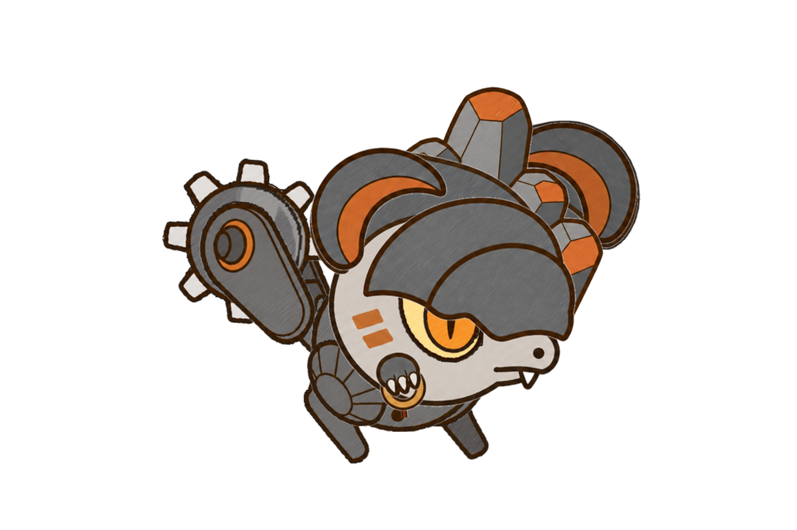
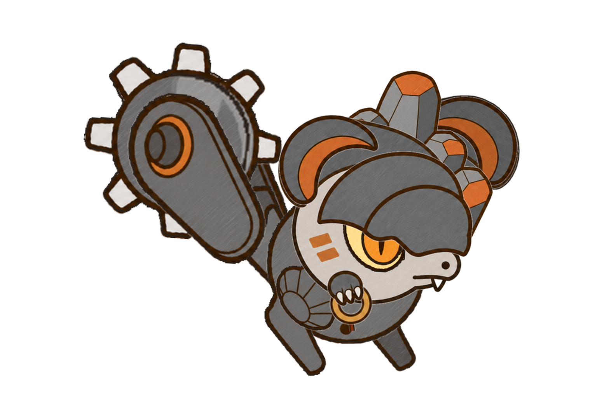
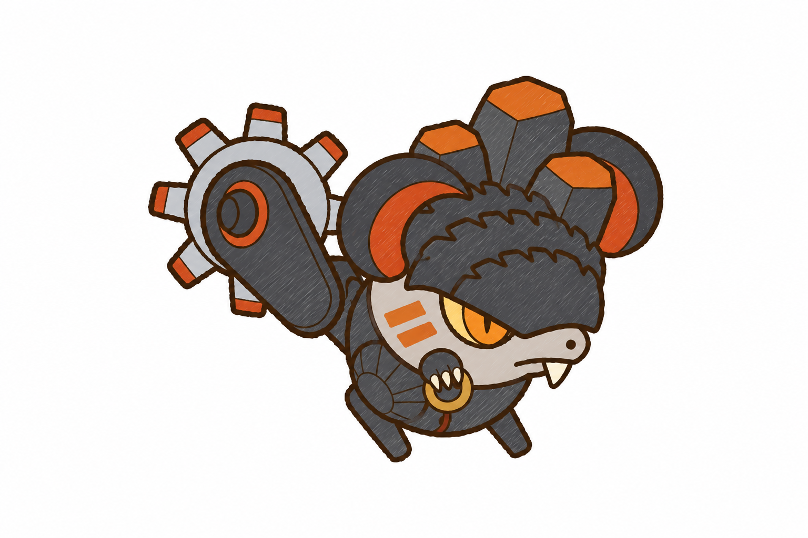
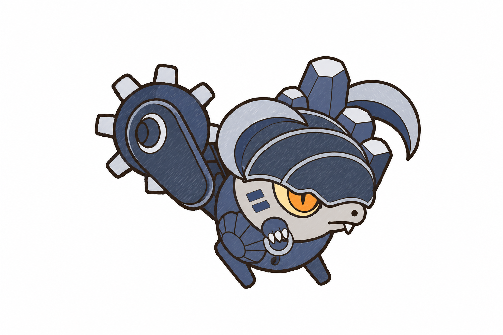

Tinh linh đuôi máy cưa — concept DẠNG 2 (cùng rig với dạng 1: thân ×1,12, đầu ×0,82, đuôi ×1,12)

Dạng 1 như đang chạy trong game

Bố cục dạng 2: tỉ lệ mới dựng trên rig (da dạng 1) — ảnh mẫu 1 của concept

B — thép nung: thép súng sẫm, mép đốt mai răng cưa, quặng thành 3 thỏi to đầu cam đỏ, răng đĩa đầu cam. Khớp bố cục 0,93

C — thép lam bạc: mai lam sẫm viền bạc, sừng bạc cong lớn, quặng lam đầu bạc, đĩa lam răng bạc. Khớp bố cục 0,93
Hướng A — quặng gỉ dữ (sắt đen viền gỉ, 5 cột quặng, sừng dài, hai nanh) bị kiểm duyệt của công cụ vẽ ảnh chặn; gen lại sau 19:01 (Codex hết hạn mức).